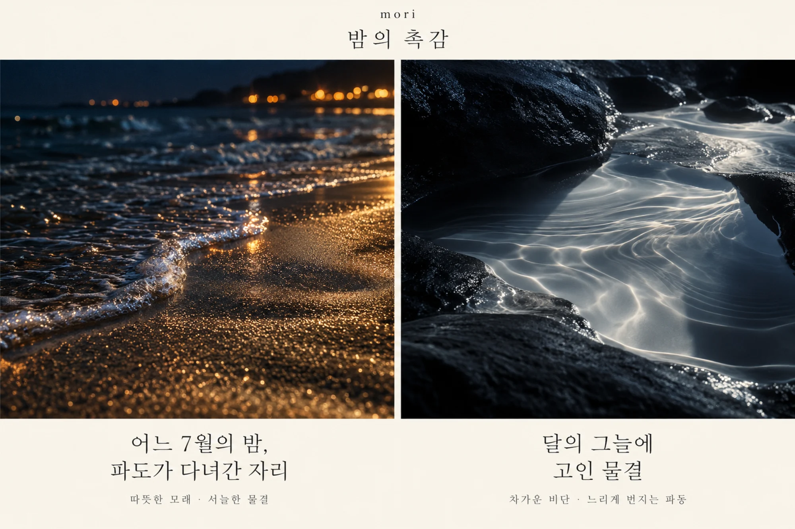
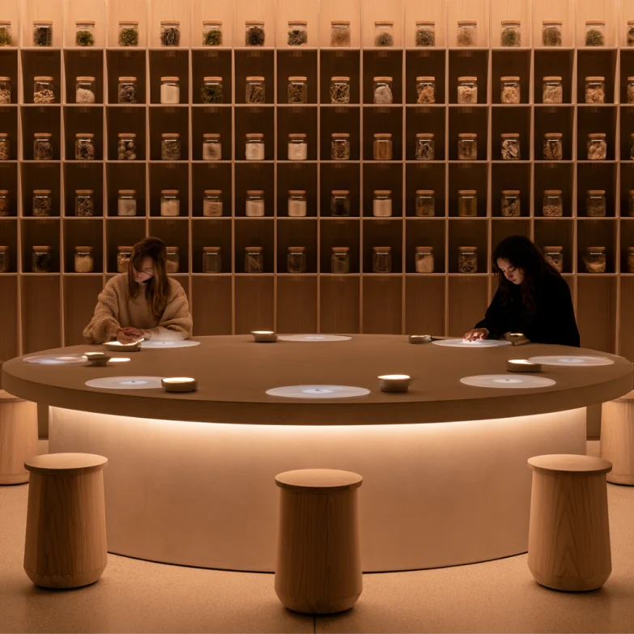
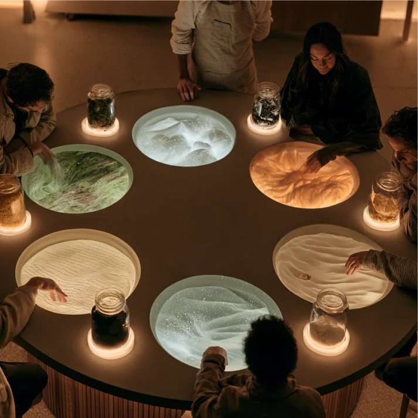
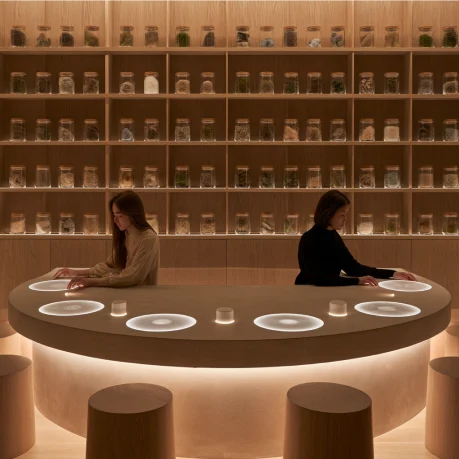
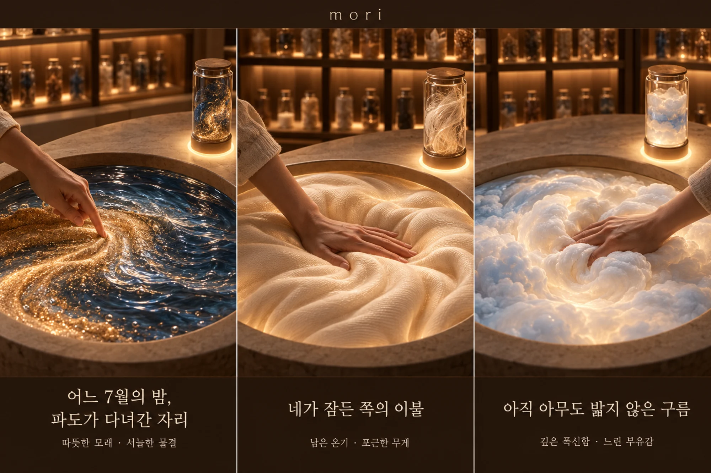

① 의미 탐색형
① 의미 탐색형김도윤 34 · 8년 차 프로젝트 매니저
같은 실수를 반복하지 않을 수 있다면 기록해두고 다시 돌아볼 가치가 있지
기록 자체보다 과거 경험에서 다음 행동에 필요한 의미를 얼마나 빠르게 발견할 수 있는지를 중요하게 생각함
미래 브랜드 프로젝트 · 과정과 최종안
The Tactile Archive
도시의 밤, 병에 담긴 촉감을
손끝으로 꺼내 보는 감각 바
앞 과제 Memory Archive에서 출발. 기억이 데이터가 되는 미래에 사람들이 원하는 것 찾기.

중요한 사건을 직접 골라 기록 · 원인 분석과 개선
생활 데이터가 자동으로 쌓임 · 취향·습관·감정 패턴 발견
특별한 순간을 직접 기록 · 소중한 순간을 오래 보존
의식하지 않아도 일상이 쌓임 · 시간이 지난 뒤 회상
① 의미 탐색형같은 실수를 반복하지 않을 수 있다면 기록해두고 다시 돌아볼 가치가 있지
기록 자체보다 과거 경험에서 다음 행동에 필요한 의미를 얼마나 빠르게 발견할 수 있는지를 중요하게 생각함
 ② 라이프 분석형
② 라이프 분석형기록은 AI가 알아서 해줘. 난 그걸 보고 내가 어떤 사람인지 알고 싶어
기록은 AI에 맡기되 해석은 직접 확인하고 싶어하며, 분석 근거가 보이고 틀린 부분을 고칠 수 있어야 결과를 신뢰함
 ③ 추억 보관형
③ 추억 보관형단순히 사진 한 장 넘겨보는 건 아쉬워요. 우리가 함께 웃고 떠들던 그 장소의 공기 자체를 남기고 싶어요.
단순 시각 기록 보존보다, 사람과 사람을 잇는 ‘공간의 현장감’과 ‘공동 재체험’이 핵심 가치로 작용함
 ④ 일상 아카이브형
④ 일상 아카이브형사진 속 활짝 웃는 얼굴보다, 거실을 채우던 따뜻한 온도와 무심한 도마 소리가 더 그리울 때가 있어.
상실감을 겪는 사용자에게는 화려하게 편집된 추억보다, 무의식적으로 쌓인 ‘일상의 여백’이 감정적 부담 없이 더 깊은 위로를 제공함


이사하며 낡은 책상을 만지면 그곳에서 작업하던 밤의 소리와 메모가 펼쳐짐
“괜찮아”라고 말한 장면 옆에 그날 남긴 속마음 메모
다툰 여행의 하루가 한 사람에겐 길을 잃은 날, 다른 사람에겐 속마음을 털어놓은 날
“별일 없었어” 싶은 하루가 빠른 걸음, 긴 정적, 반복된 한숨으로 펼쳐짐
자취방을 떠나기 전, 매일 반복하던 귀가의 순서를 남김
할머니의 말에 따라 골목이 생기고, 고쳐 말하면 공간도 바뀜
일상 속 특별한 이야기에서 브랜드로 발전시킬 대상 찾기.
| 아이디어 | 브랜드로 발전시킬 대상 |
|---|---|
| 기억을 수선하는 옷 | 의류·수선 |
| 레시피의 빈칸을 잇는 식탁 | 주방용품·식문화 |
| 이사할 때 기억을 옮기는 조명 | 조명·홈 |
| 신발이 기억하는 산책 | 신발·산책 |
| 공간을 가로질러 남기는 편지 | 문구·편지 |
| 한 잔에 쌓이는 대화 | 식기·카페 |
| 철거 전, 동네의 이야기를 여는 열쇠 | 지역 기록·열쇠 오브젝트 |


★ 선택
사라져 가는 손의 기술을 영상이 아닌 움직임 그대로 기록하고, 배우는 사람이 그 손을 직접 겪으며 자기 손으로 옮겨 가도록 돕는 서비스.
 1974년부터, 통영 나전칠기 끊음질
1974년부터, 통영 나전칠기 끊음질서른 살 직장인 수아가 퇴근 후 배울 공예를 고름. 선택 화면에는 강의 제목 대신 손들이 나열됨.
 2045년 11월, 정우의 채썰기
2045년 11월, 정우의 채썰기뇌졸중 뒤 재활 중인 마흔여섯 살 요리사 정우. 재활 프로그램 목록에 3년 전 자신의 손이 있음.
 1996년부터, 릴롱궤 중앙병원 제왕절개
1996년부터, 릴롱궤 중앙병원 제왕절개말라위 북부 보건소의 조산사 에스더. 가장 가까운 수술실까지 비포장도로로 네 시간.
수집 대상과 검색어를 주제별 표 8개로 정리
키워드마다 이미지를 모아 판으로 비교. 판을 누르면 이미지 전체를 볼 수 있음.
350장 · AI 생성 314 · 외부 출처 36
무드 키워드를 버리지 않고 서로 다른 4개 트랙으로 나눠 담음. 트랙마다 Midjourney 프롬프트를 덧붙여 가며 파생.
244장 · 모두 AI 생성
피드백을 거쳐 도착한 최종안. 도시의 밤에 문을 여는 촉감 바.

 01병 고르기
01병 고르기벽을 채운 유리병마다 서로 다른 촉감. 마음이 가는 병 하나를 고름.
 02기계에 올리기
02기계에 올리기자리마다 놓인 기계. 병을 올리는 받침과 손이 들어가는 둥근 홈이 한 세트.
 03병을 알아봄
03병을 알아봄기계가 병을 읽고, 홈이 그 병의 촉감으로 차오름.
 04손을 넣어 느끼기
04손을 넣어 느끼기홈에 손을 넣어 모래, 물결, 이불, 구름 같은 기억 속 촉감을 직접 만짐.
강서윤의 인사이트, Echo Room의 ‘일상의 온도와 질감만 복원’
손으로 겪고 손으로 옮겨 가는 경험
만져지는 표면을 찾던 키워드들









06 · 가게 안으로
테두리가 있는 것은 외부 출처, 없는 것은 AI 생성